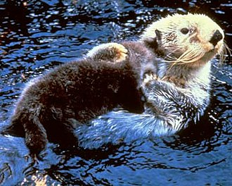
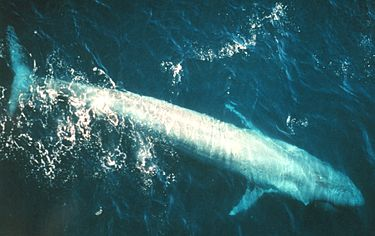
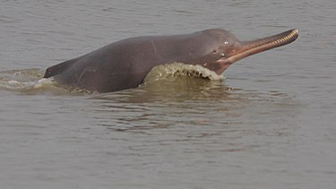

|
夏威夷僧海豹 夏威夷僧海豹（學名：Neomonachus schauinslandi）是僧海豹屬下的一種瀕危物種，原產於夏威夷群島，因而得名。夏威夷僧海豹有著灰色的毛皮、白色的腹部，身體修長；頭部扁平而較小。其體格使得其可以在深海珊瑚礁里尋覓魚蝦及章魚、烏賊等食物。在不捕獵時，它們會躺在西北夏威夷群島的沙灘上嗮太陽。成年夏威夷海豹重170～205公斤（375～452英磅），體長2.1～2.3公尺（6英尺11英寸～7英尺7英寸）。此外它也是夏威夷灰白蝙蝠之外當地唯一的原生哺乳動物。 |
 |
中華白海豚 印太洋駝海豚（學名：Sousa chinensis；英文：Indo-Pacific humpback dolphin），中文通稱為中華白海豚，又稱太平洋駝海豚、中華駝海豚、粉紅海豚等，臺灣俗稱為媽祖魚，是一種背鰭基部隆起的海豚科動物（有地域差異），膚色因地域、種群而異，多呈灰白相間的雜色，且帶有深色斑點。模式標本產自中國水域，中國的種群初生時全身呈深灰色，隨著年齡增長淡化為獨特的粉白色，頗具觀賞價值，有學者認為這是一種遇熱反應（如同人類在燥熱時會臉紅）。 |
|  |
海獺 海獺（學名：Enhydra lutris）是食肉目動物中最適應海中生活的物種，很少在陸地或冰上覓食，大半的時間都待在水裡，連生產與育幼也都在水中進行。大部分時間裡，海獺不是仰躺著浮在水面上，就是潛入海床覓食。當牠們待在海面時，幾乎一直在整理毛皮，保持它的清潔與防水性。海獺棲息於多種海岸棲地，其範圍由岸石海底和海岸線至沙或泥質的海底。多生活於水深40公尺以內的範圍，但經常會移動至更深的海域以覓食或進行季節性的移動。 |
|  |
藍鯨 藍鯨（學名：Balaenoptera musculus）是屬於鬚鯨小目的海洋哺乳動物。藍鯨不僅是地球上現存體型最大的動物，也是地球史上最大的動物之一，長超過33米，重達177公噸。藍鯨的身軀瘦長，背部青灰色，不過在水中看起來有時顏色會比較淡。與其他鬚鯨一樣，藍鯨主要以小型甲殼類（例如磷蝦）與小型魚類為食，有時也包括魷魚。藍鯨通常獨居或者和另一隻藍鯨共同生活。目前尚未知道，這些共居的藍鯨是長時間生活在一起，還是形成更為鬆散的關係。在食物高度密集的區域中，能看到多達50隻藍鯨聚集在在很小的範圍之內，但是牠們不會像其他鬚鯨那樣形成組織嚴密的大團體。 |
|  |
恆河豚 恆河豚（學名：Platanista gangetica）又稱南亞河豚、盲河豚、側遊江豚等是一種產自南亞的淡水鯨，恆河豚屬（Platanista）的唯一物種，也是恆河豚科的唯一現生種。恆河豚體呈棕灰色，背鰭小而呈三角形，鰭肢和尾鰭較大。具有狹長的嘴喙，即使在嘴未張開的情況下，也可看到明顯的牙齒生長在上下顎。 年幼的恆河豚牙齒約有一英吋長，而且是窄且彎曲的。但隨著年齡增長，牙齒變得平坦且方正。恆河豚通常獨居或組成鬆散的小群活動，牠們並不會組成嚴密且有明顯互動的群體。它們的日常活動依賴回聲定位功能，以小型魚類為主食。因眼內缺少晶狀體，所以幾乎等同於失明，僅能感受到光的強度和方向。 (分布) 恆河豚分為兩個亞種：指名亞種（恆布河豚 P. g. gangetica）主要生活在恆河及布拉馬普特拉河水系，分布範圍涵蓋印度、孟加拉國和尼泊爾，據信現存3500頭以上；印度河亞種（印度河豚 P. g. minor）僅分布於巴基斯坦的印度河，估計現存約1200–1800頭。 |